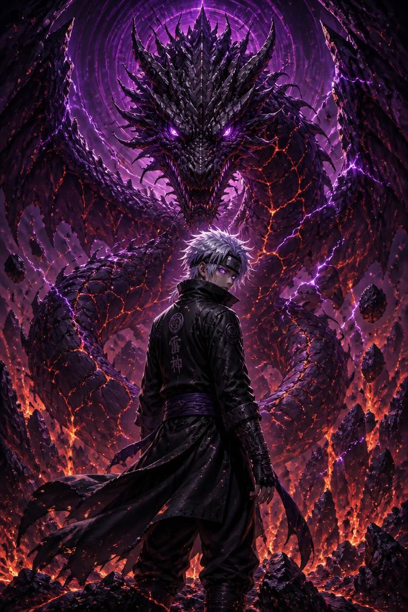
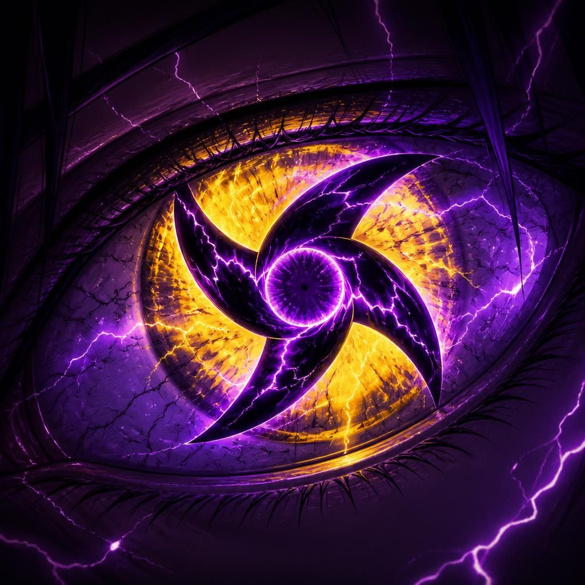

01 · Genshi Shikai
Enxerga chakra como matéria física visível. Nenhuma técnica de ocultamento de chakra funciona contra ele.
02 · Rinne Kiroku
Grava em registro absoluto tudo que já viu. Nenhuma técnica funciona duas vezes contra Leonardo.
03 · Jikū Ranse
Percebe distorções dimensionais (Kamui, Hiraishin, portais) 0,8s antes de ocorrerem.
04 · Tamashii Dōka
Sente a força vital de qualquer ser no campo; pode transferir vida própria a um aliado via olhar direto.
05 · Mugen Dōjutsu
Replica visualmente qualquer dōjutsu que vir em uso, por tempo limitado e custo proporcional à raridade.
06 · Genten Shigan
Vê a origem absoluta de chakra de qualquer técnica ou bijū — revela a fraqueza fundamental de design.
07 · Rinne Tsūshin
Canal de consciência direta com os outros portadores — distribui o mapa causal em tempo real.
08 · Sōzō Hakai
Coletiva, nunca sozinha. Com 3+ portadores em Rinne Tsūshin, reescreve a natureza do chakra na área.
· Quatro katanas-raio de peso colossal
· Causalidade corrigida pelo Shinsei
· Defesa absoluta com contra-ataque garantido
· Cria fortalezas instantâneas de escala bijū
· Invoca dragões vivos de terra e relâmpago
· Defesa mais alta entre os cinco no combate prolongado
· Jutsu bloqueado → eficiência preservada, defesa comprometida
· Ataque inimigo perfeito → resultado alterado para desfavorecer
🔥 Amaterasu Tectônico — chamas negras que se espalham pelo solo como fissuras
🌀 Izanami Sísmico — genjutsu que prende o alvo em loop até aceitar a sentença
⚔️ Susanoo Perfeito Tectônico — armadura de escala continental
⚫ Absorção total de ninjutsu
🌀 Espaço-tempo curto/médio alcance
🧲 Manipulação gravitacional avançada
🌌 Percepção Absoluta
👁️ Visão simultânea de todas as dimensões conectadas
👁️ Enxerga chakra, alma, energia natural, intenção hostil e distorções do espaço-tempo
👁️ Nenhuma técnica de ocultação, genjutsu ou invisibilidade funciona
⚫ Caminho da Absorção Suprema
Absorção bilateral de qualquer ninjutsu, senjutsu e energia
Pode absorver técnicas de ambos os lados ao mesmo tempo
Absorve ataques contínuos sem limite conhecido
Converte a energia absorvida diretamente em chakra próprio
🌀 Caminho Dimensional
Portais instantâneos para qualquer dimensão conhecida
Criação de dimensões particulares
Prisões dimensionais inquebráveis
Teletransporte de aliados e inimigos em massa
Corte espacial que ignora distância
🧲 Caminho da Gravidade Suprema
Shinra Tensei e Banshō Ten'in simultâneos
Manipulação independente da gravidade ao redor de cada alvo
Criação de micro singularidades gravitacionais
Compressão gravitacional capaz de esmagar montanhas
Campo gravitacional permanente ao redor do usuário
🌑 Yin Primordial + Kuroyami
Selamento absoluto de chakra
Selamento da alma
Selamento de habilidades oculares
Escuridão primordial que consome luz, chakra e energia natural
Correntes negras que prendem até seres dimensionais
Caminho da Alma
Leitura instantânea da alma
Extração da alma sem contato físico
Reparação completa da própria alma
Proteção contra qualquer ataque espiritual
Purificação ou corrupção da alma de um alvo
Caminho da Vida
Regeneração celular instantânea
Reconstrução de órgãos
Cura de aliados em larga escala
Restauração de membros perdidos
Revitalização completa do corpo
Caminho da Morte
Toque que acelera a deterioração do corpo
Necrose instantânea do chakra inimigo
Envelhecimento acelerado de tudo que toca
Cancelamento da regeneração adversária
Execução espiritual após enfraquecimento
Caminho Temporal
Acelerar ou desacelerar o tempo localmente
Congelar um alvo por alguns segundos
Reverter danos recentes sofridos
Prever múltiplas possibilidades futuras
Criar zonas onde o tempo flui de maneira diferente
Caminho da Criação
Materializar armas de chakra negro
Criar golems dos Seis Caminhos
Construir barreiras dimensionais
Manifestar correntes de selamento gigantes
Produzir esferas negras de destruição
Caminho do Julgamento
Julga automaticamente a força e intenção do inimigo
Enfraquece quem possui intenção assassina
Amplifica ataques contra alvos considerados culpados
Cancela técnicas proibidas próximas
Marca o alvo com um selo inevitável
Passivas
♾️ Reserva de chakra praticamente inesgotável
⚡ Ativação instantânea de qualquer habilidade
🛡️ Resistência extrema a genjutsu
🌀 Imunidade a distorções dimensionais
🌑 Imunidade a técnicas de absorção de chakra
👁️ Coordenação perfeita entre os dois olhos
💀 Resistência elevada a ataques contra a alma
🌌 Percepção automática de qualquer alteração dimensional
🔥 Controle absoluto do chakra até em nível microscópico
⚫ Adaptação automática a novas técnicas observadas
Tremor no Impacto — A lâmina pesada transmite força sísmica ao contato: escudos trincam, armas adversárias vibram fora de controle, estruturas de terra se rompem.
Guarda como Arma — Leonardo usa a guarda em chifre para travar, empurrar e liberar descarga tectônica em contato próximo.
Shinsei · Forma Lâmina — O Shinsei aplicado à Shinzan faz a lâmina existir em estado de resultado garantido. O adversário não desvia — ele chega até a lâmina.
Peso do Julgamento — Passiva mecânica. Cada golpe da Sabaki que é bloqueado — não esquivado, bloqueado — transfere uma fração do peso tectônico do Doraijin para o ponto de contato da defesa inimiga, de forma invisível e indolor. Após quatro bloqueios consecutivos do mesmo inimigo, o chakra estrutural da defesa começa a ceder como rocha sob pressão constante; no quinto bloqueio, a defesa colapsa de dentro sem aviso.
A Sentença já Existe — Passiva filosófica. A Sabaki responde à certeza de Leonardo. Quando ele já decidiu o resultado de um combate — não quando quer vencer, mas quando sabe que vai vencer — a rosa dos ventos no centro da lâmina pulsa uma única vez em azul intenso e para, estática, até o fim do combate. É como se a arma concordasse com o julgamento e não precisasse mais processar. Leonardo nunca explicou esse comportamento; quando perguntado, disse que a arma só confirma o que já é verdade.
Fratura Cumulativa — Passiva de luta. Toda defesa, bloqueio ou armadura de chakra que resiste a um golpe de Leonardo sai da troca com uma rachadura estrutural permanente naquele ponto. A defesa nunca se recupera sozinha durante o combate — cada rachadura fica, e o próximo golpe no mesmo ponto tem chance maior de atravessar direto.
Base Inabalável — Passiva de luta. Leonardo já decidiu o resultado antes da luta começar — e o corpo dele luta como quem sabe disso. Impactos, ondas de choque, empurrões e tentativas de desequilíbrio simplesmente não tiram sua base ou postura; ele não perde o chão nem recua um passo sem querer, não importa a força do golpe recebido.
Raiz de Contato — Ao encostar a ponta da lâmina no chão ou em uma superfície sólida, Leonardo sente vibrações a metros de distância, como se o terreno reportasse a ele.
Fio Inabalável — A lâmina de Leonardo nunca lasca nem entorta contra bloqueios — o aço absorve o choque redistribuindo a força para o próprio corpo dele, não para o fio.
Fundação Rachada — Todo jutsu de terra que ele conjura deixa fissuras permanentes no solo ao redor, alterando o terreno para o resto do combate.
Julgamento Lento e Certo — Os jutsus de Leonardo raramente erram o alvo pretendido — ele prioriza precisão sobre velocidade em qualquer técnica que conjura.
Carga Acumulada — Relâmpago represado nas mãos de Leonardo se acumula silenciosamente enquanto ele caminha, pronto para descarregar no próximo golpe sem selagem adicional.
Eco Tectônico — O impacto de um jutsu de Leonardo reverbera no solo por segundos depois do golpe original, atingindo quem se aproxima do ponto de impacto.
Sentença Devolvida — Ao aparar um golpe físico, parte da força recebida é redirecionada para o próximo ataque de Leonardo, como um juiz que devolve a pena ao remetente.
Colapso Retido — Cada bloqueio bem-sucedido acumula pressão tectônica na Sabaki; após o terceiro, o próximo contra-ataque ignora parte da defesa inimiga.
Certeza sob Impacto — Quando um golpe recebido seria grave o bastante para interromper a maioria dos lutadores, Leonardo simplesmente não perde a ação seguinte.
Réplica Sísmica — Bloquear um golpe poderoso o bastante gera um pequeno tremor local que desequilibra levemente o agressor, abrindo brecha para o contra-ataque.
Cicatriz Estrutural — Todo golpe que rompe a guarda de Leonardo deixa uma rachadura na própria arma ou punho do agressor, visível e permanente.
Descarga em Cadeia — O choque das escamas libera relâmpago represado direto no alvo, e o dano elétrico salta para qualquer inimigo próximo, encadeando descargas sucessivas.
Rugido Sísmico Paralisante — O rugido do dragão viaja pelo solo antes de ser ouvido, atingindo quem está por perto com um tremor que rompe o equilíbrio e abre brecha para o golpe seguinte.
Domínio de Caça — Sobre terreno onde já lutou antes, o dragão de Leonardo ataca com força e velocidade crescentes, reconhecendo cada fissura do próprio campo de extermínio.
Espinhos da Fundação — A marca deixada no terreno depois de cada combate se ergue como lâminas de pedra sob comando de Leonardo, empalando quem pisar sobre o solo que ele já reivindicou.
Nenhum golpe erra. Nenhum resultado falha.
O julgamento já foi pronunciado.